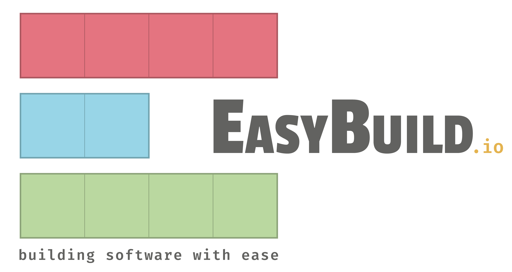

What is EasyBuild?¶

EasyBuild is a software build and installation framework that manages (scientific) software in an efficient way, without compromising on performance. Easybuild is especially tailored towards High Performance Computing (HPC) systems, and provides a command-line interface to facilitate the installation and management of a scientific software stack.
Elevator pitch¶
EasyBuild intends to relieve HPC support teams from manually managing software installations while at the same time providing a consistent and well performing scientific software stack to end users of HPC systems.
It serves as a uniform interface for installing scientific software and saves valuable time (and frustration) by the automation of tedious, boring and repetitive tasks.
In addition, EasyBuild can empower scientific researchers to self-manage their software stack, and it can serve as a tool that can be leveraged for building optimized container images.
The project has grown to become a platform for collaboration among HPC sites worldwide.
Key features¶
EasyBuild is capable of fully autonomously installing (scientific) software, including making sure that all necessary dependencies are installed, and automatically generating environment module files.
No admin privileges are required: it is sufficient to have write permissions to the preferred software installation prefix.
EasyBuild is highly configurable via configuration files, environment variables, and command line options. The functionality can be dynamically extended via plugins, and hooks are available for further site-specific customizations.
The installation procedure executed by EasyBuild is thoroughly logged, and is fully transparent via support for dry runs and tracing the software installation procedure as it is performed.
EasyBuild supports using a custom module naming scheme, allows for hierarchical module naming schemes, and integrates with various other tools ranging from resource managers (Slurm and GC3Pie), container tools (Singularity and Docker), packaging tools (FPM), and so on.
Focus points¶
EasyBuild was created specifically for installing scientific software on HPC systems, which is reflected in some of the design choices that were made.
Performance¶
EasyBuild strongly prefers to build software from source code, whenever possible.
This is important to ensure that the binaries that are installed can maximally exploit the capabilities of the system architecture on which the software will be run.
For that same reason, EasyBuild optimizes software for the processor architecture of the build host
by default, via compiler options like -march=native (GCC), -xHost (Intel compilers), etc.
This behaviour can be changed via the --optarch configuration setting.
Reproducibility¶
In addition to performance, reproducibility of installations is a core aspect of EasyBuild.
Most software installations performed with EasyBuild use a particular compiler toolchain,
with which we aim to be in control over the build environment and avoid relying on tools and libraries
provided by the operating system. For similar reasons, we try to provide all required dependencies through EasyBuild as well,
with a few notable exceptions, like OpenSSL for security reasons, and Infiniband and GPU drivers which
are too closely intertwined with the operating system.
For both toolchains and dependencies, fixed software versions are specified in the easyconfig files. That way, easyconfig files can easily be shared with others: if they worked for you it is very likely that they will work for others too, because the vast majority of the software stack is controlled by EasyBuild.
Community effort¶
In a number of different ways, we try to encourage EasyBuild users to collaborate and help each other out.
We actively recommend people to report problems and bugs, to submit ideas for additional features and improvements, and to contribute back when possible, be it by opening pull requests to the GitHub repositories or the documentation.
Through the foss and intel common toolchains,
we try to focus the efforts of the EasyBuild community a bit to specific toolchains,
which increases the usefulness of the easyconfig files we collect in the central repository.
Last but not least, EasyBuild provides various GitHub integration features that greatly facilitate the contribution process: opening, updating, and testing pull requests, reviewing incoming contributions, and much more can all be done directly from the EasyBuild command line. This not only saves time, effort, brain cycles, and mouse clicks for contributors, but it also makes the review process for maintainers significantly easier. All together this leads to improved stability and consistency.
What EasyBuild is not¶
EasyBuild is not YABT (Yet Another Build Tool): it does not replace established build
tools like CMake or make, it wraps around them.
If the installation procedure of a software package involves running some unholy trinity of tools while whispering
the correct magic incantations, EasyBuild automates this process for you.
It is not a replacement for traditional Linux package managers like yum, dnf or apt.
EasyBuild relies on certain tools and libraries provided by the operating system. This includes glibc, OpenSSL,
drivers for Infiniband and GPUs, and so on. It is required that these tools are installed and managed by other means.
This is typically done via the package management tool that comes with your Linux distribution.
Finally, EasyBuild is not a magic solution to all your (software installation) problems. You may, and probably still will occasionally, run into compiler errors unless somebody has already taken care of the problem for you.
Requirements¶
Since EasyBuild is primarily intended for installing (scientific) software on HPC systems, the main target is systems running some flavor of GNU/Linux. EasyBuild also works on macOS, but significant effort would be required to use it extensively there.

EasyBuild is implemented in Python, and is compatible with Python 2.7 and 3.5+. Since Python 2 is no longer maintained, it is recommended to use a recent version of Python 3 for running EasyBuild.
An environment modules tool is required for running EasyBuild. The modern Lua-based implementation Lmod is strongly recommended, but other (Tcl-based) implementations are also supported. Both Tcl and Lua are supported as syntax for environment module files.
Development¶
 EasyBuild is actively developed by a worldwide community under the
GPLv2 open source license
via the
EasyBuild is actively developed by a worldwide community under the
GPLv2 open source license
via the easybuilders organisation on GitHub, in the following repositories:
- easybuild-framework
- easybuild-easyblocks
- easybuild-easyconfigs
- easybuild (website, documentation)
- easybuild-tutorial (this tutorial)
Stable versions of EasyBuild have been released roughly every 6-8 weeks since 2012, and are published via the Python Package Index (PyPI), see https://pypi.org/project/easybuild.
Comprehensive testing practices are applied throughout the development cycle, with extensive suites of unit and integration tests being run in a CI environment (GitHub Actions), consistent testing of incoming contributions (pull requests), and thorough regression testing before every release.
A worldwide community¶
EasyBuild has grown into a community project since it was first released publicy in 2012, and is used and developed by dozens (hundreds?) of HPC centres and consortia worldwide.
Since 2016 the EasyBuild community has gathered for a yearly EasyBuild User Meeting, which is an open and highly interactive event that provides a great opportunity to meet fellow EasyBuild users, developers, and maintainers, and to discuss related topics, learn about new aspects of the tool, and how other HPC sites leverage it, and integrate it with other tools like Jenkins, Ansible, CernVM-FS, ReFrame etc.
The map below shows from which cities the EasyBuild documentation has been visited in the last year (March 1st 2020 - March 1st 2021), and how often.
HPC sites, consortia, and companies that use EasyBuild include (but are not limited to):


Getting help¶
Documentation¶
If you have any questions about EasyBuild, make sure to check the EasyBuild documentation first, which is available at https://docs.easybuild.io.
It is not unlikely that an answer to your question is available there already. The search box on the top left may be helpful.
GitHub¶

You can open an issue in one of the EasyBuild repositories in the easybuilders GitHub organisation to
ask questions, report problems or share suggestions and ideas for additional
improvements.
Please try to post the issue in the most suitable repository. If you are not sure which repository is most suited just go ahead and open the issue anyway, the EasyBuild maintainers can move your issue if deemed appropriate.
Also here you can use the search box on the top left, to see if somebody else has already asked a similar question or reported a similar problem.
Mailing list¶
Feel free to ask any questions or provide feedback via the EasyBuild mailing list
easybuild@lists.ugent.be.
Keep in mind that you must be subscribed to the mailing list in order to post messages there! You can subscribe via this link.
In 2016-2017 over 1,000 messages were posted to the EasyBuild mailing list. More recently this has decreased to about 700 messages per year, mostly due to the EasyBuild Slack channel.
Slack¶
The EasyBuild Slack is a quick and easy way to get in touch with the EasyBuild community. Over 400 people have joined it so far, and there is usually somebody awake in there who may be able to help you out.
To join the EasyBuild Slack request an invitation via https://easybuild-slack.herokuapp.com.
If you are not a big fan of Slack, you can also consider joining the #easybuild
IRC channel (available on the Freenode IRC network).
A bot relays messages between this IRC channel and the #general channel in the EasyBuild Slack.
Note
A dedicated #tutorial channel was created for this tutorial in the EasyBuild Slack.
If you have any questions that are specific to this tutorial, please post them there.
Conference calls¶
Every other week on Wednesday an EasyBuild conference call is set up to discuss recent developments, provide an outlook to the next EasyBuild release, and provide answers to questions that can be raised by the people attending the call.
These conference calls are open to anyone interested in the EasyBuild project, and have been organised since November 2013.
More information, including the dates and times of the next calls, is available here.